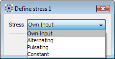
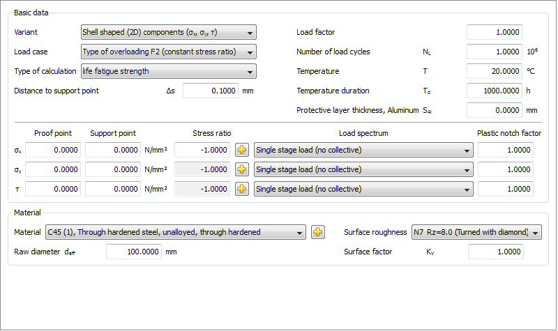

|
|
|


应力比
平均应力记录在 R 值中。与无平均应力的情况（循环载荷，R=-1）相比，在平均压应力试验中，S-N 曲线（Wöhler 曲线）会移动到更高的可持续应力幅值。在平均拉应力试验中，S-N 曲线（Wöhler 曲线）会移动到更低的可持续应力幅值。可持续应力幅值对平均应力的依赖性因材料而异，称为平均应力影响。这通常随材料的拉伸强度而增大。
此处 R 的定义范围为 -1 到 +1

图 57.3：输入特定 R 值

图 57.4：输入自定义 R 值。
随着表面粗糙度的增大，S-N 曲线（Wöhler 曲线）会移动到更低的应力幅值，但表面粗糙度本身并不是原因。强度更多受表面具体特性的影响。此外，尽管表面特征相似、表面粗糙度相同，不同的加工工艺也会导致不同的材料内部应力状态，从而使 S-N 曲线（Wöhler 曲线）彼此差异很大。
Stress ratios
The mean stress is recorded in the R-value. In comparison to the mean stress-free case (cyclic loading, R=-1), the S-N curve (Woehler lines) is moved to higher sustainable stress amplitudes in trials with mean compression stresses. In trials with mean tensile stresses, the S-N curve (Woehler lines) is moved to lower sustainable stress amplitudes. The sustainable stress amplitude's dependency on the mean stress is material-specific, and is called the influence of the mean stress. This usually increases along with the material's tensile strength.
Here R is defined from -1 up to +1
Figure 57.3: Inputting the specific R-value
Figure 57.4: Inputting your own R-value.
As the surface roughness increases, the S-N curve (Woehler lines) moves to lower stress amplitudes, but the surface roughness alone is not the cause for this. The strength is much more affected by the detailed properties of the surface. In addition, despite similar surface characteristics and the same surface roughness, different processing procedures can cause different material internal stress states, resulting in S-N curves (Woehler lines) that differ from each other greatly.